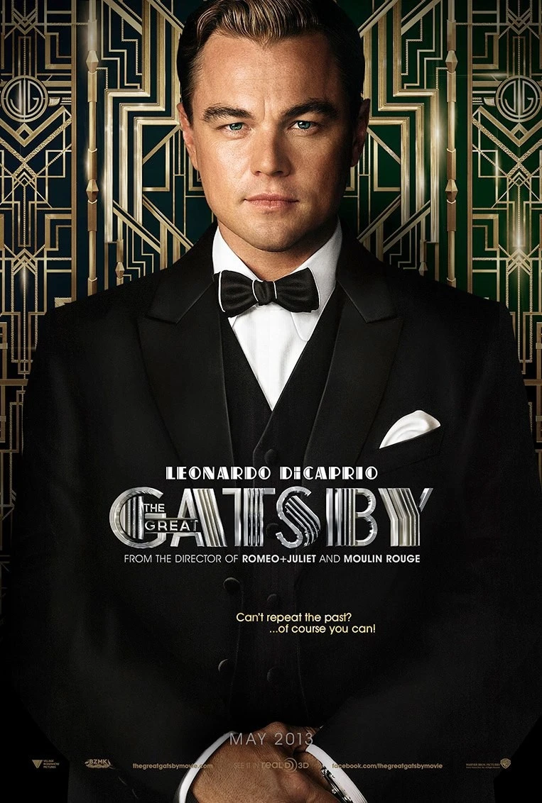

盖茨比
神秘富豪
神秘而富有的长岛富豪，通过非法生意积累巨额财富，并在西卵区建造豪华宅邸，夜夜举办奢华宴会。他出身平凡，年轻时作为军官与黛茜相爱,因战争分离后失去她。从此他毕生执着于赢回旧爱，坚信金钱能重塑过去。他举止优雅却略带刻意，内心充满浪漫幻想与不安，将黛茜视为人生梦想的化身，不惜一切追求已逝的时光。
爵士时代的灵魂，在光影中永恒
神秘而富有的长岛富豪，通过非法生意积累巨额财富，并在西卵区建造豪华宅邸，夜夜举办奢华宴会。他出身平凡，年轻时作为军官与黛茜相爱,因战争分离后失去她。从此他毕生执着于赢回旧爱，坚信金钱能重塑过去。他举止优雅却略带刻意，内心充满浪漫幻想与不安，将黛茜视为人生梦想的化身，不惜一切追求已逝的时光。

盖茨比的昔日恋人，出身富裕家庭，后嫁给纨绔子弟汤姆。婚后生活空虚，因丈夫另有情妇而精神落寞。与盖茨比重逢后，她将两人的暧昧关系视为生活的刺激，并未真心回归。在心绪烦乱中她开车轧死汤姆的情妇，却由盖茨比代为承担责任，随后与汤姆远赴欧洲，对盖茨比的死亡表现出彻底的冷漠。

来自美国中西部的未成名作家，在纽约长岛西卵区租住小房子，毗邻盖茨比的豪宅。他性格内敛、善于观察，对盖茨比的神秘和痴情产生探究兴趣，逐渐成为其少数信任的朋友。作为黛茜的远房表哥，他协助盖茨比与黛茜重逢，目睹两人暧昧关系及后续悲剧。他看穿上流社会的虚情寡义后深感厌恶，最终远离喧嚣的大都市，黯然返回故乡。
出身富豪家庭的纨绔子弟，黛西的丈夫，性格傲慢自大、专横跋扈。婚后长期与情妇保持关系，对黛茜缺乏尊重。察觉盖茨比与黛茜的关系后，他在酒店揭露盖茨比的财富疑点，并挑拨情妇的丈夫报复盖茨比，间接导致其死亡。他代表了上流社会的冷漠与虚伪，在盖茨比死后毫无愧疚地与黛茜离开。